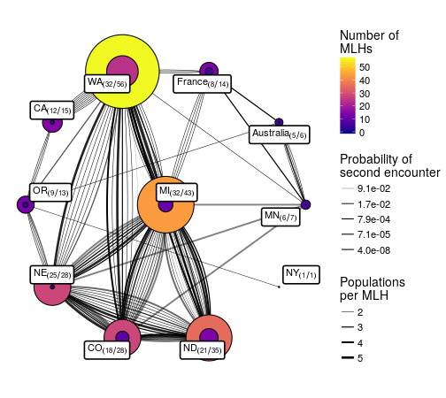

Preprint Day!
4 min readToday, we finally published a preprint for a manuscript that spans over 15 years of data 🎉!
Our massive Sclerotinia pop gen study out as preprint today @PeerJPreprints https://t.co/O85hUURi2s #AgriculturalScience #Genetics #Mycology
— Sydney Everhart 🍄 (@SydneyEverhart) October 3, 2017
Here’s the citation:
Kamvar ZN, Amaradasa BS, Jhala R, McCoy S, Steadman JR, Everhart SE. (2017) Population structure and phenotypic variation of Sclerotinia sclerotiorum from dry bean in the United States. PeerJ Preprints 5:e3311v1 https://doi.org/10.7287/peerj.preprints.3311v1
This project started in 2003 as a way to screen new dry bean lines for resistance to white mold by growing these lines in screening nurseries12 with unsuppressed populations of S. sclerotiorum (the causal agent of white mold). Over the years, sclerotia were collected from these fields and stored in the collection at UNL.
We used the collection from these white mold screening nurseries along with isolates from grower fields to test if the populations of S. sclerotiorum in the screening nurseries were genetically differentiated from populations in the surrounding regions.
Data Analysis
For this paper, I decided to go full reproducibility. This means that I have all of the scripts, data, and code available (at https://github.com/everhartlab/sclerotinia-366#readme). All of the figures, tables, and numbers in the manuscript are generated directly from the analyses. There was almost no copying and pasting on my part. It was a lot of effort, but seriously the figures turned out amazing!

What’s more is that because the code is available, all the instructions for recreating this figure are available: https://github.com/everhartlab/sclerotinia-366/blame/master/doc/RMD/MLG-distribution.Rmd
All the results and manuscript is controlled via Makefile. This means that you can see exactly how the scripts are to be run. I included a DESCRIPTION file in the repository so you can automatically install the necessary packages by using devtools:
# install.packages("devtools")
devtools::install_github("everharthlab/sclerotinia-366", repos = "https://mran.microsoft.com/snapshot/2017-09-30")Because we linked our project with the Open Science Framework, you can also cite the code and data:
Kamvar, Z. N., Amaradasa, B. S., Jhala, R., McCoy, S., Steadman, J., & Everhart, S. E. (2017, October 3). Population structure and phenotypic variation of Sclerotinia sclerotiorum from dry bean in the United States. http://doi.org/10.17605/OSF.IO/EJB5Y
Docker
Perhaps the coolest thing about this project was my first foray into using Docker as a way to improve reproducibility. I created a Dockerfile that gets rebuilt with Circle CI and updated on Docker Hub every time I make a change to the repository. This is really cool because you can download and explore the analysis without having to install anything more than just Docker.
To explore the full analysis, you can download docker and type in your terminal:
docker run --rm -dp 8787:8787 zkamvar/sclerotinia-366:latest
# 1f3e92ec0378c0a44cce63990a4b07f78f38bc0d9ecfd3b19ea042d33e892be4Once the hash shows up, you can go to your browser and type localhost:8787 and an Rstudio window will open (if you’re presented with a login screen, login with user: rstudio, pass: rstudio):
Rstudio startup
The analysis is in the /analysis directory, but since that’s not writable, you should copy it to the home directory. In Rstudio type:
system("cp -R /analysis .")And you should see an analysis folder pop up in your Files pane. Double click on that, scroll all the way down and double click on znk_analysis.Rproj, Rstudio will ask you if you want to switch to that project.
Now, you can navigate to the RMD documents in doc/RMD or the manuscript in doc/manuscript/manuscript.Rmd and play around.
If you type CTRL + ., you can navigate to mlg-mcg.Rmd, where you can re-execute all of the code by selecting “Run All” from the Run drop-down:
Run all
Once everything runs, you have all the data from that Rmarkdown document to inspect and manipulate.
You can even copy the analysis to your computer while the image is running:
docker ps
# CONTAINER ID IMAGE COMMAND CREATED STATUS PORTS NAMES
# 1f3e92ec0378 zkamvar/sclerotinia-366:latest "/init" 24 minutes ago Up 24 minutes 0.0.0.0:8787->8787/tcp modest_cori
docker cp modest_cori:/analysis .Once you’re finished, you can close that browser window/tab and then kill your container using docker stop:
docker ps
# CONTAINER ID IMAGE COMMAND CREATED STATUS PORTS NAMES
# 1f3e92ec0378 zkamvar/sclerotinia-366:latest "/init" 24 minutes ago Up 24 minutes 0.0.0.0:8787->8787/tcp modest_cori
docker stop modest_cori
# modest_coriSeriously. ✨ This is really awesome ✨
So, I could have gone with a different method for reproducibility such as packrat, but I have previously been burned by it. Specifically, it would do this thing where, when you opened up the repo, it would boot itself and attempt to load or build the packages for the project without asking. This was a pain in the butt back in 2014 when rgdal support was flimsy on OSX. For that reason, I chose to go the route of the DESCRIPTION file and Docker route.